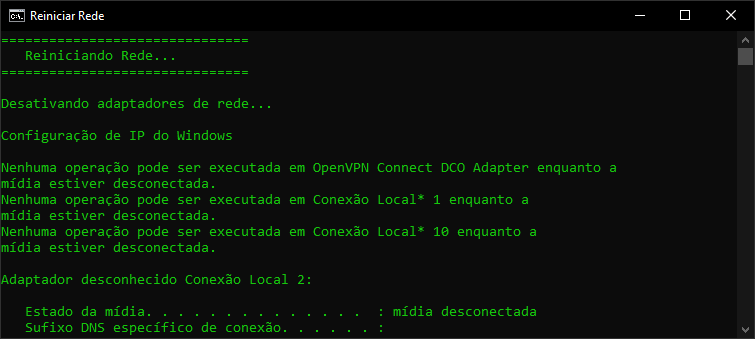
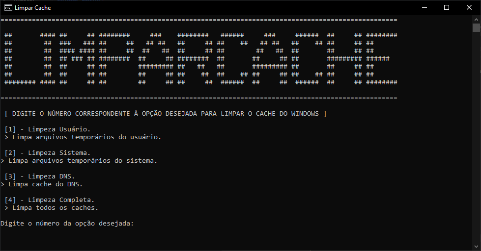
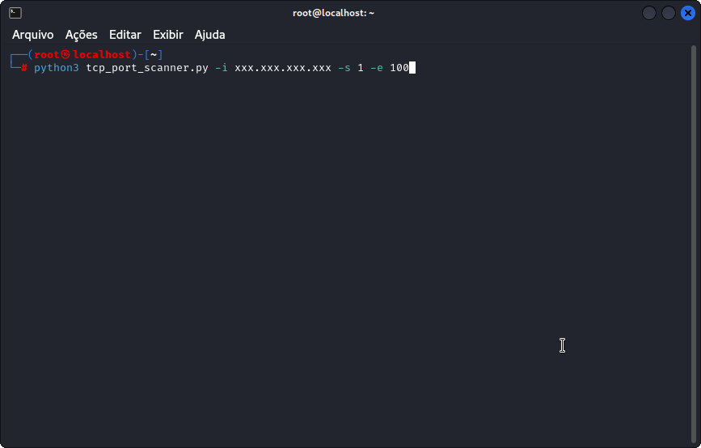
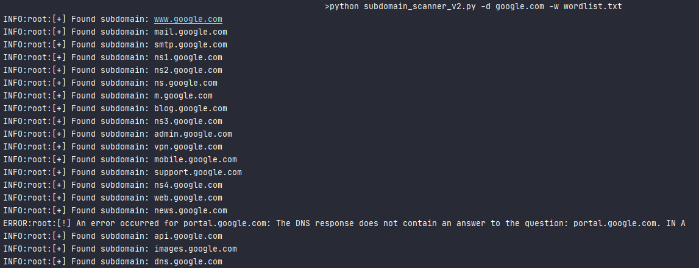
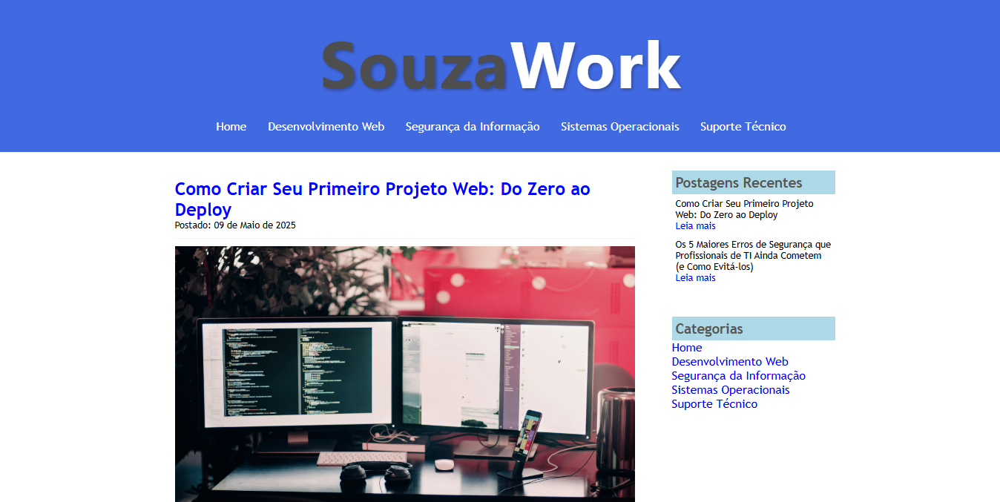

Meus projetos foram desenvolvidos ao longo dos estudos e experiências práticas em Desenvolvimento Web e Cibersegurança, abrangendo desde scripts em Python para automação e testes de segurança, até aplicações web completas com HTML, CSS, PHP e MySQL. Cada projeto busca aplicar conceitos técnicos de forma prática e acessível, enquanto fortalece minhas habilidades em programação, segurança da informação e desenvolvimento full stack.

Reiniciar Rede CMD
Script em .bat para Windows que desativa os adaptadores de rede, limpa o cache DNS e renova o IP. Ajuda a restaurar rapidamente a conectividade da rede.
Ver Projeto

Limpar Cache
Script .bat que executa limpezas parciais e completas em sistemas Windows, removendo arquivos temporários, cache de sistema e DNS.
Ver Projeto

TCP Port Scanner
Script em Python que verifica portas abertas em um IP e identifica os serviços em execução. Utiliza argparse e socket.
Ver Projeto

Subdomain Scanner
Script em Python para identificar subdomínios ativos de um domínio por meio de resolução DNS, usando uma wordlist.
Ver Projeto

Blog SouzaWork
Blog temático sobre tecnologia, com conteúdos em Desenvolvimento Web, Segurança da Informação, Sistemas Operacionais e Suporte Técnico.
Ver Projeto

Login e Cadastro de Cliente
Sistema web com autenticação, cadastro de usuários e gerenciamento de dados. Usa PHP com integração ao banco de dados MySQL.
Ver Projeto